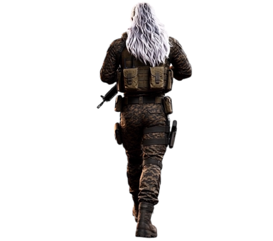

↻
スマートフォンを横向きにしてください
LANDSCAPE ONLY
DARKOUT 2

LOADING ASSETS...
0
%
CALCULATING...
日本語へ切り替え
DARKOUT 2
CHOOSE HOW TO PLAY
PLAY WITH WIRELESS CONTROLLER
PLAY WITH TOUCH CONTROLS
DON'T HAVE A WIRELESS CONTROLLER?
GET A WIRELESS CONTROLLER
HP
SURVIVE
01:30
STEALTH
OFF
ROID 1
FOCUS
AMMO
12
/
12
RELOADING...
LAB / EXPERIMENT AREA
PAUSE
PAUSE
TOUCH CONTROLS : OFF
CONTROLLER AIM SENSITIVITY
LOW
NORMAL
HIGH
STAGE TYPE
LAB
ARMORED
ESCAPE
GAME MODE
COMBAT MODE
ESCAPE MODE
ENEMY SELECT / AUTO MODE
AUTO
DRONE
ROID 1
ROID 2
GABRIEL
ADAM SPHERE
ADAM
DEBUG
DEBUG DISPLAY : OFF
COPY DEBUG
RESUME
FPS
--
FRAME
--
ms
DPR
--
GAMEPAD
NONE
STATE
--
DEBUG
EVENT LOG
MOVE
LIGHT
AIM
FIRE
RELOAD
STEALTH
FOCUS
N-DASH
S-STEP
W-DASH
E-DASH